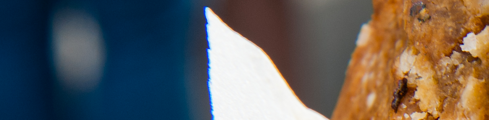

<div class="row">
  <section class="quoi">
    
    <h2 class="large-offset-1 large-4 small-4 medium-4">Quoi ?</h2>
    <div class="large-offset-2 large-8 small-12 medium-12">
      <section id="cepourquoi">
        <h3 class="small-12 medium-12">CE POUR QUOI ON SE LEVE LE MATIN</h3>
        <p class="small-12 medium-12">A l’origine du Bas Moteur il y a une idée simple : créer une société qu’on n’aurait jamais envie de vendre. Mettre un coup de clef de 18 dans les molaires de la malbouffe. Travailler avec des potes. Bosser quand on veut, où on veut, habillé comme on veut. Créer des produits qu’on a nous-mêmes envie de consommer.
Toutes ces petites choses qui changent la vie, donnent du sens, et rendent le
travail… différent. Au bout il y aura le succès ou l’échec, nous verrons bien. Plus que le but, c’est la route qui compte.
En créant notre Food-Truck une seule chose nous semblait évidente : nous voulions des produits qui nous ressemblent : simples, authentiques, au plus proche de la nature. Des produits sans prise de tête, faciles à comprendre et qui apportent quelque chose de nouveau. Et surtout des produits bons et sains. Fastfood MAIS de qualité !</p>
      </section>
    </div>
  </section>
</div>
